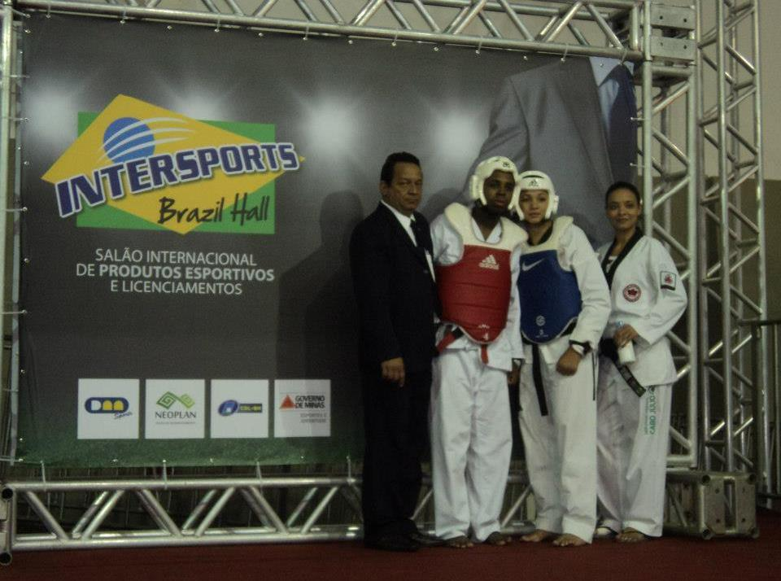

Taekwondo Olímpico, Formação Cidadã & Inclusão de Deficientes Auditivos
Com raízes no trabalho técnico de mestres e professores renomados de Minas Gerais (incluindo o Mestre Benedito de Jesus Magalhães, ex-técnico da Seleção Mineira e professor do CEFET-MG), o IAP Phoenix oportuniza aulas de taekwondo para jovens de periferia, com pioneirismo no acolhimento de pessoas com deficiência auditiva, promovendo defesa pessoal, foco e formação de campeões.